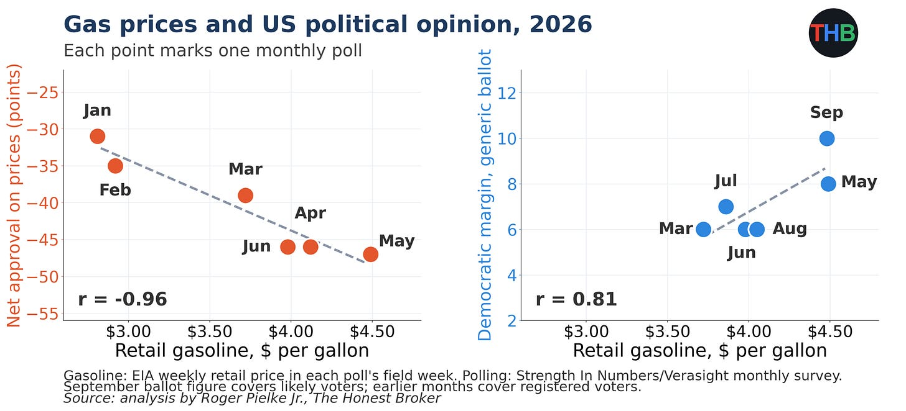
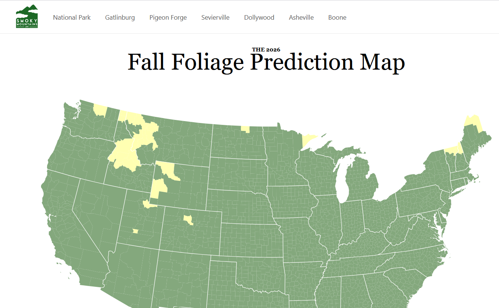
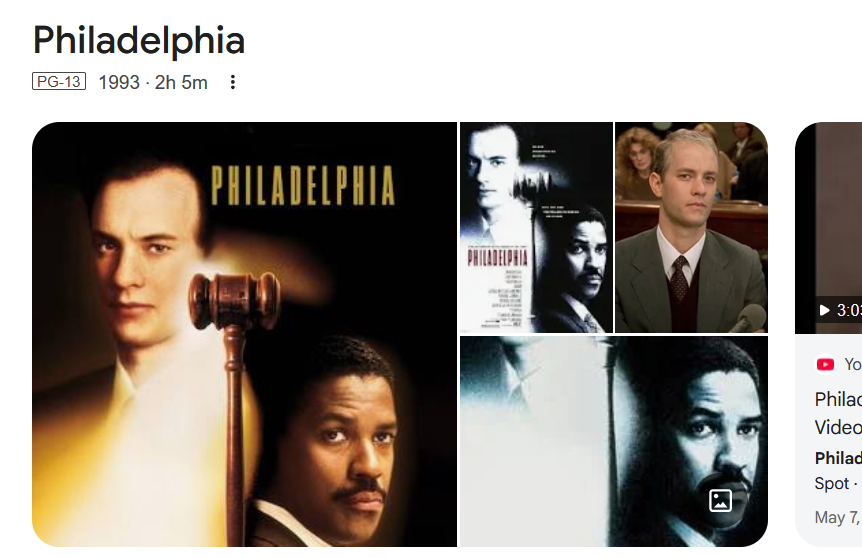

WEEKLY REMINDERS/ANNOUNCEMENTS – Eco 238, Week 6
Topics and Readings This Week: We will finishing efficiency examples, possibly moving into discussions of the Precautionary Principal then into the next section on Valuation.
Weekly Assignment: Your SHOW ME poster is due this week. There is NO WORK due over break.
TA Office Hours and Info
Look for an announcement from our Head TA Jingyao Wang Wu for
an update on Office Hours and discussion session opportunities.
My Availability
Check tiny.cc/RizzoHours for up to date information. Stop by to
talk about your projects!
I will be away from electronics from Friday afternoon through Monday morning.
This Week at Rochester
STAFF PICKS
Seven starting points for the week.
Thursday–Sunday · Campus-wide
October 1–4. Headliners include Amna Nawaz, Andrew Ross Sorkin, and Nick Offerman, with performances, open houses, and family activities. Use the live schedule for individual times, admission, and availability.
Friday · Music
8 PM · Kodak Hall. Electronica played by an acoustic ensemble. TICKETED.
Saturday · Sports
Volleyball at noon and 4; football at 1; men’s soccer at 5; women’s soccer at 7:30. Full opponents and venues below.
Monday · Theater / Talk
Rachel Chavkin on making theater
5–6 PM · Zoom. The Hadestown director joins Nigel Maister. RSVP REQUIRED.
Wednesday · Talk
AI Coffee Salon: What should we trust?
1–2 PM · Welles-Brown Room, Rush Rhees. An informal discussion of information and credibility. FREE.
Thursday, October 8 · Economics
Pablo Peña: Human Capital for Humans
3:30 PM · Morey 321. An accessible introduction to the economic science of people.
Thursday, October 8 · Theater
8 PM · Smith Theatre, Sloan Performing Arts Center. Greek myth, freedom, desire, and a post-show reception. TICKETED.
Check out our full schedule here: https://rochesterrizzo.github.io/Rizzo-Hours/this-week-at-rochester/
Career Opportunity
Scroll down here a little, Edgeworth just posted.
Upcoming Special Events
The Politics and Markets Project, Hosted by Professor David Primo
Title: Topic TBD (this will be a moderated panel discussion)
Date: Wednesday, November 4th
Time: 7:30pm to 8:30pm
Location: Wegmans Hall, 1400.
More Info on the PMP: Follow on Instagram
Department of Economics Special Guest Lecture
Title: Human Capital for Humans, with moderation by U of R Economics Undergraduate Isaac Miller
Who: Pablo Pena of the University of Chicago
Date: Thursday, October 8th
Time: 3:30pm
Location: Morey 321
More Info: Why do people marry, have kids, invest in health, or choose a career? Economics has an answer, and it's not "supply and demand," it's human capital theory, the framework Nobel laureate Gary Becker built and spent his career applying to every domain of human life. Pablo Peña studied under Becker at Chicago, taught his famous course after him, and has now written the accessible version of that legendary class: Human Capital for Humans.
Join us for a talk and conversation with Professor Peña about the book — how economists think about parenting, aging, marriage, and the everyday decisions that shape who we become. Expect a short talk, a moderated discussion, and open Q&A. Copies of the book will be available for purchase (and signing) at the event.
About Professor Pena: Pablo Peña first encountered human capital theory twenty years ago as an undergraduate captivated by a course taught by Nobel laureate Gary Becker at the University of Chicago — an experience he's described as immediately clarifying. That encounter led him to TA the course, and eventually to teach it himself. Peña is now an Associate Instructional Professor in Economics and the College at the University of Chicago, specializing in applied price theory, human capital theory, and empirical economics, and his research uses experimental and quasi-experimental methods and large datasets to test economic theories with actionable applications for business, nonprofits, and government. Outside academia, he co-founded Microanalitica, previously served as Director of Private Sector Partnerships at the Development Innovation Lab, and headed Economic Studies at Mexico's National Banking and Securities Commission. He earned his Ph.D. in Economics from the University of Chicago.
His book, Human Capital for Humans: An Accessible Introduction to the Economic Science of People (University of Chicago Press, 2025), has been nominated as a finalist for the Manhattan Institute's 2026 Hayek Book Prize, and has drawn praise from economists including Steven Levitt, Tyler Cowen, and Nobel laureate Michael Kremer.
Department of Economics PIZZA and PAYOFFS Special Event

Title: Pizza and Payoffs: Everything you wanted to know about the Econ major — courses, careers, and what you can actually do with an economics degree.
Who: Professor Lisa Kahn and special guest Chris Nosko
Date: Monday, November 9
Time: 5:30pm to 7:00pm
Location: TBD
More Info: Chris Nosko is the head economist for Amazon! Very short department information session and lots of time for Q&A and discussions with Nosko and our department faculty.
Department of Economics Annual GILBERT LECTURE (walk around Harkness to see a little bit of its history)*

Title: TBD
Who: Robert Staiger, Chief Economist of the World Trade Organization
Date: mid-November
Time: TBD
Location: TBD
More Info: Learn more about Professor Staiger here.
THE GILBERT LECTURE
The Donald W. Gilbert Memorial Lecture is one of the great traditions of the University of Rochester Department of Economics.
Donald W. Gilbert was deeply tied to both the University and the city of Rochester. A Rochester native and East High graduate, he entered the University in 1917, graduated in 1921, earned a master’s degree in economics at Rochester, studied at Harvard, and then spent nearly his entire professional life at UR. He rose from instructor to professor and chair of Economics, became dean of graduate studies, and in 1948 became the University of Rochester’s first provost. During his leadership of graduate education, Rochester was admitted in 1941 to the Association of American Universities, then a very small group of the leading research universities in the United States and Canada.
Gilbert also believed strongly that economics should reach beyond the classroom and seminar room. He helped create the University of Rochester Management Clinics, which connected the University with dozens of Rochester businesses and industrial organizations, and he was heavily involved in civic and public-policy life. When he died in 1957, at only 57, President Cornelis de Kiewiet described him as one of the University’s most important links to the Rochester community.
After Gilbert’s death, his friends, colleagues, alumni, and former students established a memorial lecture in his honor. The goal was entirely consistent with Gilbert’s career: bring serious economics to bear on the difficult practical and policy problems of the day.
The first Gilbert Lecture was delivered on April 30, 1959, by the great public-finance economist Richard Musgrave, speaking on the federal budget and the American economy. What followed was an extraordinary run of speakers. In the first decade alone, the series included Paul Samuelson, Milton Friedman, Kenneth Boulding, Wassily Leontief, Robert Solow, and James Tobin.
Over the following decades, Gilbert lecturers have included many of the most important economists of the modern era: Kenneth Arrow, Arthur Lewis, George Stigler, Franco Modigliani, Gary Becker, Robert Fogel, Thomas Schelling, James Heckman, Vernon Smith, Peter Diamond, Richard Thaler, Michael Kremer, Paul Romer, and many others.
Remarkably, 18 Gilbert lecturers later received the Nobel Prize in Economics.
Just as important as the names are the subjects they came to Rochester to discuss: unemployment, inflation, economic growth, population, pollution, regulation, Social Security, technological change, development, financial crises, education, health care, inequality, international trade, and the institutions that shape economic life.
The Gilbert Lecture is not simply a celebration of famous economists. It promotes the particular idea about that Rochester economics takes the tools of the discipline and aims them at the world outside the classroom.
One final Rochester detail: Gilbert Hall is named for the same Donald W. Gilbert, another reminder of how significant he was to the development of the University.
SOME THINGS THAT CAPTURED OUR ATTENTION
More on the Nanotech Photonic Incandescent: Why is it dead?
Ding Dong – What Does This Tell You About Climate Risk/Resilience? “Ken Griffin Is Making the Largest Donation to Higher Education in U.S. History. Citadel CEO’s gift will launch a Carnegie Mellon University campus in Miami.”
Hydrogen Bomb Strikes the UK: “While the rest of the world is busy reacting to a triple shortage of liquefied natural gas (LNG), crude oil, and refined products, His Majesty’s Royal Government is fixing to build a pipeline network for a molecule that nobody will produce because it is too expensive, in order to move it across vast distances despite nobody demanding that it be done, only for it to arrive at a location where nobody will have built the necessary-but-money-losing assets to make any use of it. And one wonders why the whiff of revolution is spreading across Britannia.”
The AI Postmoterm: So which America are we going to choose?: The postmortem will be this. Many people panicked about the possibility of strong AI models killing us all. That fear was not based on peer-reviewed scientific research showing a high chance of doom, nor was doom indicated in any market prices of the time, including measures of risk. It was a story, just like this is a story, and it was spread on social media. The key point of the doom story was that, if America keeps the No. 1 spot in AI models, the models will be so strong they will do us all in, or lead to unimaginable catastrophes. We were too afraid to have America keep the lead, forgetting that if truly destructive AI is our fate, the doomer scenario can come from Chinese AI as well.
Today, we cannot say for sure that the AI doom scenario is false. But is it a story we wish to live by? Is belief in it a good way to protect and extend life, liberty, and the pursuit of happiness? Will it help us much, or for long, if it is Chinese AI that turns on us and does us in?
In my view, successful societies accept challenges and meet them. Solving problems, bit by bit, is the best way to ensure that we have the capabilities to meet big and truly existential risks, should those risks come along. Debating the chances of our doom, ex ante, on a highly speculative basis, is unlikely to provide the same kind of expertise and talent cultivation. It is instead more likely to demoralize and immobilize us.”
Maybe People Just Are Not That Concerned with the Problem. YMMV as to why. “We report on two randomized field experiments that incentivized thousands of Oregon homeowners to participate in pre-existing fire department programs to reduce wildfire risk. Across both experiments, financial incentives of $100 to $500 resulted in up to 12% of homeowners scheduling free defensible space assessments, while information-only approaches achieved assessment takeup rates of 3% at most.”
What the AI Race, and “Slowdown” May Really Be All About (or, people are motivated by all kinds of things beyond just $): “Recently I have been reading my review copy of Kevin Roose’s excellent forthcoming book The AGI Chronicles: The Inside Story of the Race to Create an Artificial Superintelligence. A major theme of the book—I would say the major theme—is how strong and competitive the rivalries have been between Dario, Altman, and Musk. Each believes that the others cannot be trusted to gain super-powerful AI capabilities.
Thus, when you observe these individuals and their companies jockeying for position and preeminence, it is too cynical to think it is just about the money (each of them already has plenty). The actions of each are rooted in the sincere belief that their own company would best serve the world by winning the race toward very powerful AI.
So when these CEOs plead altruism, you should actually believe them, even though obvious selfish motives also happen to align with their plans. One can reasonably argue about who ought to win the race, but I favor the outcome where all of them, including Meta and Google, roughly tie for first place, and the market remains highly competitive.
So they are selfish in a sense, but along the metric of power, where they perceive (correctly or not) “selfish and altruistic” to be quite closely correlated. Note I am using the word “power” in a general capabilities sense, you do not have to believe they intend evil coercive exercise in this context. Furthermore, it is not mainly about “capturing the regulator,” but rather winning in the market and then having an immense ability to achieve ends before the others do. So yes they are sincerely worried about a host of safety issues, but they are all the more sincerely worried about not being the ones to win the race. To the extent we wish to cite those CEOs as authorities, “who gets it is the most important thing of all” would be the takeaway lesson.
Do note that for all the talk of pause, the race to invest in compute is continuing apace and even intensifying. That is the real variable to watch. If a theory does not explain observed behavior toward compute, which of course costs real dollars, the theory is failing to explain what is going on.
Standard competition! I do not flip out about this. But obviously there are some world views where you might view these (and other) actors as evil, and furthermore think they can act without much constraint, and so on. Those are not my world views. I see a lot of competition and a lot of ego, and then I think of Adam Smith. Standard stuff, just at much higher stakes than usual.”
Anti-mosquito Drones: anyne taking bets on how soon these get repurposed for ____?
Peak Plastic? “Researchers have figured out how to program the lifespan of plastic — making it last for days, months, or years, depending on the need. Inspired by natural polymers like DNA, they added “neighboring groups” to the plastic chains; these trigger reactions that let the material break itself down once it’s no longer needed. It looks promising for short-lived packaging — as long as the leftover fragments after it decomposes are proven to be safe.”
Peak Peak-Oil: discovery of petroleum coke increases well supply by 20%
AI to Optimize Electric Car Charging
WINTERCOW’S MOOING: Crabpotism and Antisocial Punishment. Creepy voice podcast here; Need some time to make it sound better, suggestions welcome.
CHART(S) OF THE WEEK: How You Feelin’?

PHOTO OF THE WEEK: Where and when for best fall foliage: https://smokymountains.com/fall-foliage-map

VIDEO/DOCUMENTARY/BOOK/CARTOON, ETC OF THE WEEK: The AIDS epidemic was not an alarmist overreaction, but I am not sure we appreciate NOW just how serious the disease was, and the world it found itself in.

* * *QUOTE * * *
After Apple-Picking
By Robert Frost
My long two-pointed ladder's sticking through a tree
Toward heaven still,
And there's a barrel that I didn't fill
Beside it, and there may be two or three
Apples I didn't pick upon some bough.
But I am done with apple-picking now.
Essence of winter sleep is on the night,
The scent of apples: I am drowsing off.
I cannot rub the strangeness from my sight
I got from looking through a pane of glass
I skimmed this morning from the drinking trough
And held against the world of hoary grass.
It melted, and I let it fall and break.
But I was well
Upon my way to sleep before it fell,
And I could tell
What form my dreaming was about to take.
Magnified apples appear and disappear,
Stem end and blossom end,
And every fleck of russet showing clear.
My instep arch not only keeps the ache,
It keeps the pressure of a ladder-round.
I feel the ladder sway as the boughs bend.
And I keep hearing from the cellar bin
The rumbling sound
Of load on load of apples coming in.
For I have had too much
Of apple-picking: I am overtired
Of the great harvest I myself desired.
There were ten thousand thousand fruit to touch,
Cherish in hand, lift down, and not let fall.
For all
That struck the earth,
No matter if not bruised or spiked with stubble,
Went surely to the cider-apple heap
As of no worth.
One can see what will trouble
This sleep of mine, whatever sleep it is.
Were he not gone,
The woodchuck could say whether it's like his
Long sleep, as I describe its coming on,
Or just some human sleep.